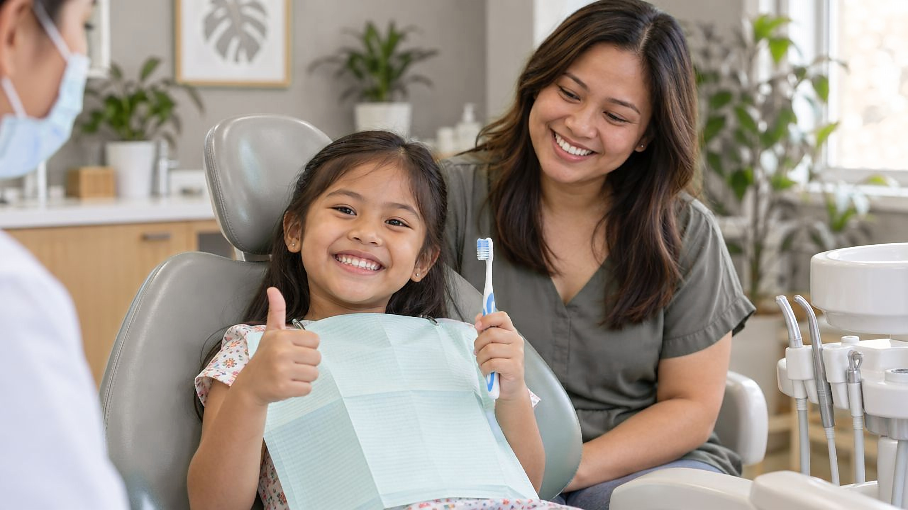

7 AM
Morning
- Brush for two minutes with fluoride toothpaste.
- Brush your tongue too.
- Have breakfast before brushing if you're drinking juice.
Home / Journal
Short, practical reads from our team. No jargon, just things that make a difference.

A good first visit sets the tone for life. Here's how we keep it short, fun and stress-free.
Brushing harder doesn't clean better. It wears enamel and pushes your gums back.
Use a soft brush and small, gentle circles.
Two minutes, twice a day, is enough when the technique is right.
If your bristles flatten within a month, you're pressing too hard.
You don't have to give up your morning cup to keep a bright smile.
Rinse with water right after your drink.
Drink through a straw for iced coffee.
Wait 30 minutes before brushing after acidic drinks.
It's not just how much sugar you eat. It's how often.
Every snack starts a 20-minute acid attack on your enamel.
Group sweets with meals instead of grazing all day.
Water between meals gives your teeth a break.
Your brush misses about a third of each tooth. Floss reaches the rest.
Curve the floss into a C around each tooth.
Slide gently below the gumline, never snap it.
Floss picks or water flossers are fine if string is hard.
Start early, keep it positive, and make it routine.
Book the first visit by age one or when the first tooth appears.
Talk about the dentist as a friendly visit.
Bring a favourite toy and keep the visit short.
Some problems don't hurt until they're serious.
Bleeding gums when you brush or floss.
Sensitivity to hot, cold or sweet food.
Swelling in your gums or face. Call us the same day.
7 AM
1 PM
10 PM
Send it in. We answer the most common ones in future articles.